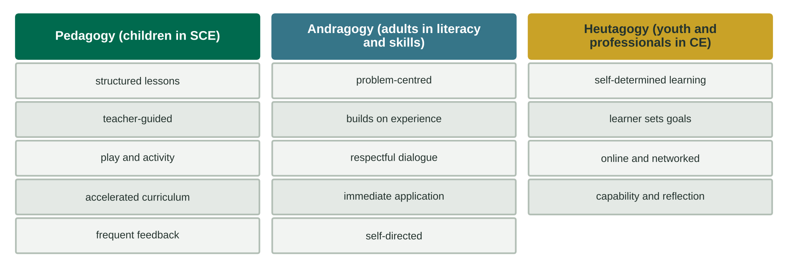
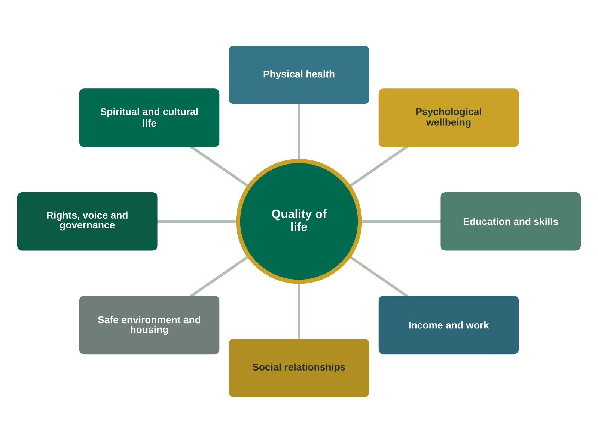

PC 124 Nonformal and Lifelong Education
Non-formal, continuing and lifelong learning: concepts, developing-country contexts, Bangladesh programmes and implementation
Contents
- Unit 1: Aspects of Non-formal Education
- Unit 2: Continuing Education
- Unit 3: NFE and CE in Developing Countries
- Unit 4: Non-formal and Lifelong Education (NFLE) Programmes in Bangladesh
- Unit 5: NFLE Programme Implementation
- Unit 6: Future Education, Quality of Life and Lifelong Learning
- Exam Preparation Bank
- References
About this course
Most of what people learn across their lives happens outside formal schooling. This course examines non-formal education (NFE) and continuing education (CE) as routes to basic education, skills, second chances and lifelong learning (LLL), with special reference to Bangladesh as a developing country. It covers the origin, concepts and scope of NFE; its links with EFA, UPE, second-chance education and education in emergencies; continuing education and its relation to professional development, skills and the knowledge society; the history, actors and programmes of non-formal and lifelong education in Bangladesh; implementation through planning, management and appropriate adult pedagogies; and the links between lifelong learning, quality of life and future education.
Course objectives
Explain the origin, concepts, features, goals and scope of NFE and its relation to SCE, EiE, EFA and skills.
Explain continuing education and its relation to CPD, HRD, skills, the SDGs and the knowledge society.
Analyse NFE and CE in developing countries and Bangladesh, including equivalency and national development roles.
Describe NFLE programmes, actors and implementation processes, and the role of LLL in quality of life and future education.
Each unit follows the official syllabus order. Read the narrative first, then the Key point boxes, then test yourself with the Exam focus questions.
Golden boxes = must-remember ideas. Teal boxes = definitions and study tips. Green boxes = Bangladesh context.
The final chapter is a question bank (MCQs with answers, short and broad questions) in the style of university examinations, followed by full references in APA 7th style.
Statistics on enrolment, budgets and policies change every year. Before an exam, check the latest BANBEIS, DPE, UGC and UNESCO figures.
Unit 1: Aspects of Non-formal Education
1.1 Origin of NFE
The term "non-formal education" became prominent with Philip H. Coombs's The World Educational Crisis: A Systems Analysis (1968), which argued that formal school systems in developing countries could not meet growing demand, were costly and often irrelevant, and that alternative forms of organised learning were needed. Coombs and Manzoor Ahmed developed the formal/non-formal/informal typology in studies for the World Bank and ICED (Coombs, Prosser & Ahmed, 1973; Coombs & Ahmed, 1974). Influences included Freire's popular education, Illich's Deschooling Society (1971), the Faure Report Learning to Be (1972), and the community development and adult literacy movements.
1.2 Concept and definitions
Non-formal education (Coombs & Ahmed, 1974): "Any organised, systematic, educational activity carried on outside the framework of the formal system to provide selected types of learning to particular subgroups in the population, adults as well as children."
Non-formal education (UNESCO ISCED, 2011): Education that is institutionalised, intentional and planned by an education provider, and whose defining characteristic is that it is an addition, alternative and/or complement to formal education within the process of lifelong learning of individuals.
Bangladesh's NFE Act 2014 defines non-formal education as education provided outside the formal system for out-of-school children, adolescents, youth and adults through flexible approaches, including basic literacy, life skills, livelihood skills and continuing education.
1.3 Salient features
Organised and purposeful, but flexible in time, place, curriculum and duration.
Learner-centred and need-based: content drawn from learners' lives and needs.
Short-cycle and part-time, compatible with work and family.
Low cost: uses community facilities and local facilitators.
Participatory: learners and communities involved in planning.
Diverse providers: government, NGOs, community organisations, employers.
Focus on disadvantaged groups: out-of-school children, illiterate adults, women, the poor, working children.
May or may not lead to certification; increasingly linked to equivalency with formal education.
1.4 Scope
Literacy and numeracy; post-literacy and continuing education; second-chance primary education; life skills; livelihood and vocational skills; health, nutrition, population and family life education; agricultural extension; civic and rights education; environmental education; early childhood development; and community development.

Figure 1. The scope of non-formal education
1.5 Goals, objectives, significance and target people
Goals: provide basic education and learning opportunities to those excluded from formal education; reduce illiteracy; enhance skills for livelihood; empower individuals and communities; and support lifelong learning.
Objectives: literacy and numeracy; life and livelihood skills; awareness of rights and responsibilities; improved health and quality of life; and pathways back into formal education.
Significance: complements formal education; reaches the hardest to reach; cost-effective; relevant to local needs; supports national development and the SDGs.
Target people: out-of-school children (8–14); adolescents and youth who dropped out; illiterate and neo-literate adults; women; working children; urban slum dwellers; ethnic minorities; persons with disabilities; refugees and people affected by disasters.
1.6 NFE and second-chance education (SCE)
Second-chance education gives learners who missed or dropped out of school a new opportunity to acquire basic education and qualifications, often through accelerated learning programmes that compress the primary curriculum (e.g. five years into three or four). NFE is the main delivery mode for SCE. In Bangladesh, the Out-of-School Children (OoSC) Programme under BNFE and earlier programmes such as ROSC (Ananda schools) and BRAC's non-formal primary schools are examples. SDG 4.1 and 4.6 call for such pathways.
1.7 Education in emergencies: local and global perspectives
Global: INEE Minimum Standards (2010); the Education Cannot Wait fund (2016); the Global Education Cluster; refugee education strategies (UNHCR's Refugee Education 2030). Non-formal approaches (temporary learning spaces, accelerated learning, radio education) are often the first response when formal schools are disrupted.
Local (Bangladesh): learning centres for Rohingya children (LCFA, Myanmar Curriculum Pilot); continuity of learning during floods (boat schools such as Shidhulai Swanirvar Sangstha's floating schools); and remote learning during COVID-19.
1.8 NFE in relation to EFA, UPE, CPE, OoSC and CE
| Term | Meaning | Relation to NFE |
|---|---|---|
| EFA (Education for All) | Global commitment (Jomtien 1990, Dakar 2000) to meet the basic learning needs of all children, youth and adults | NFE was recognised as essential for reaching EFA goals 3 (youth and adult learning) and 4 (adult literacy) |
| UPE (Universal Primary Education) | All children of primary age enrolled in and completing primary school (MDG 2) | NFE provides alternative routes for children who cannot attend formal schools |
| CPE (Compulsory Primary Education) | Primary education made compulsory by law (Bangladesh, 1990) | NFE helps those who fall outside compulsory schooling (e.g. over-age children) |
| OoSC (Out-of-School Children) | Children of school age not enrolled or who have dropped out | The main target of second-chance NFE |
| CE (Continuing Education) | Learning after initial education | NFE often provides post-literacy and continuing education |
1.9 Achieving skills and the role of NFE
NFE develops foundational skills (literacy, numeracy, digital literacy), life skills (WHO's ten core life skills: decision-making, problem-solving, creative thinking, critical thinking, effective communication, interpersonal skills, self-awareness, empathy, coping with emotions and coping with stress), livelihood and vocational skills (tailoring, poultry, mobile repair, handicrafts), and entrepreneurial and financial skills. It contributes to SDG target 4.4 (skills for employment) and 4.6 (literacy).
Unit 2: Continuing Education
2.1 Concept, definition, aims, purpose and importance
Continuing education: Learning activities undertaken after the completion of initial education, by people who have left the formal system, to update, broaden or deepen knowledge and skills for personal, professional or social purposes.
In developing countries, continuing education also refers to post-literacy and follow-up programmes that prevent neo-literates from relapsing into illiteracy and help them apply literacy to life (UNESCO's continuing education framework; Ahmed & Ouane, 1987).
Aims: maintain and enhance literacy; upgrade skills; support career development; enable personal growth; promote active citizenship; and support community development.
Importance: rapid change in knowledge and technology makes initial education insufficient; workers need reskilling; neo-literates need reinforcement; and societies need informed, adaptable citizens.
2.2 CE in relation to education, NFE and further learning
CE is part of the broader concept of lifelong learning. It can be formal (evening degree courses, open university programmes), non-formal (training workshops, community learning centre courses) or informal (self-study, reading). Further learning includes further education (post-secondary, non-university) and higher education for adults.
2.3 Clientele and types of CE
Clientele: neo-literates; school dropouts; workers and professionals; women; farmers; the unemployed; senior citizens; and community leaders.
Types (UNESCO's typology for post-literacy and continuing education, Ahmed & Ouane, 1987; Ouane, 1989):
Post-literacy programmes: consolidating literacy skills.
Equivalency programmes: alternatives to formal education leading to equivalent certificates.
Income-generating programmes: vocational skills for earning.
Quality-of-life improvement programmes: health, nutrition, environment.
Individual interest promotion programmes: hobbies, culture, religion, sports.
Future-oriented programmes: new skills and technologies.
")
Figure 2. Types of continuing education programmes (after UNESCO, Ouane, 1989)
2.4 CE in relation to CPD and HRD
Continuing Professional Development (CPD): the systematic maintenance, improvement and broadening of knowledge and skills throughout a professional's working life (e.g. teacher CPD, medical CPD). CE provides much of CPD.
Human Resource Development (HRD): organisational and national processes to develop people's capacities. CE is a key strategy for HRD, turning population into productive human capital.
2.5 CE in relation to skills
CE enables upskilling (improving current skills) and reskilling (learning new skills for new jobs). In the Fourth Industrial Revolution, automation and AI make reskilling essential. Recognition of Prior Learning (RPL) allows skills gained informally to be certified (in Bangladesh, under the National Skills Development Authority's RPL system).
2.6 CE, the SDGs, lifelong education and the knowledge economy
SDG 4 promotes lifelong learning opportunities for all; targets 4.3, 4.4 and 4.6 are directly linked to CE.
Lifelong education (LE): the principle that education should be available throughout life (Faure, 1972; Delors, 1996).
Knowledge economy (KE): an economy in which growth depends on the production, distribution and use of knowledge (OECD, 1996). Knowledge-based society (KBS): a society that generates, shares and uses knowledge for prosperity and wellbeing (UNESCO, 2005, Towards Knowledge Societies). CE is essential for both.

Figure 3. Lifelong learning encompasses formal, non-formal and informal learning across the whole life span
Unit 3: NFE and CE in Developing Countries
3.1 Concept and characteristics of developing societies
Developing societies are characterised by lower per-capita incomes, large rural and informal sectors, rapid population growth or large youth populations, high poverty and inequality, limited infrastructure and public services, high illiteracy, gender disparities, vulnerability to disasters, and dependence on primary production (Todaro & Smith, 2020). Implications for education: large numbers of out-of-school children and illiterate adults; limited public funds; competing demands of work and survival; and the need for relevant, flexible, low-cost education.
3.2 Learning needs, demands and opportunities in Bangladesh
Needs: basic literacy and numeracy (adult literacy around three-quarters of adults aged 15+ in recent BBS estimates, leaving tens of millions non-literate); second-chance education for millions of out-of-school children; skills for a large youth population; digital literacy; life skills (health, nutrition, rights, disaster preparedness); and financial literacy.
Demands: rising aspirations for certificates and jobs; migrant workers' skill needs; women's demand for income-generating skills.
Opportunities: BNFE programmes; NGO schools; community learning centres; TVET short courses; open and distance learning (Bangladesh Open University); online platforms (Muktopaath); mobile phone penetration; and the NFE Act 2014 equivalency framework.
3.3 Linkage and equivalency of NFE and CE with formal education
Equivalency means recognising non-formal learning outcomes as equal to defined levels of formal education, enabling learners to move between systems.
The NFE Act 2014 provides for equivalency between NFE and formal education levels and for a legal basis for BNFE.
Pathways: graduates of NFE primary programmes can enter formal secondary schools (e.g. BRAC NFPE graduates entering Class VI); Bangladesh Open University's SSC and HSC programmes; TVET certificates under BNQF/NSQF; and RPL.
Challenges: quality assurance, social perception of NFE as "second-class", weak coordination between MoPME, MoE and NSDA.

Figure 4. Building pathways between non-formal and formal education
3.4 Role of NFE and CE in national development
| Dimension | Contributions |
|---|---|
| Social | Literacy, health and hygiene awareness, reduced child marriage, women's empowerment, community participation |
| Economic | Livelihood skills, productivity, income generation, entrepreneurship, migrant workers' skills, microfinance linked with education |
| Cultural | Preservation of local culture and languages, folk media, community libraries, cultural identity |
| Ethical and moral | Values education, civic responsibility, tolerance, social harmony |
| Political | Rights awareness, informed voting, local governance participation |
| Environmental | Disaster preparedness, climate adaptation, environmental conservation |
Unit 4: Non-formal and Lifelong Education (NFLE) Programmes in Bangladesh
4.1 Chronological development

Figure 5. Milestones of non-formal and lifelong education in Bangladesh
1970s: after independence, mass literacy campaigns; NGOs such as BRAC, Dhaka Ahsania Mission and FIVDB began adult literacy and functional education programmes.
1980: Mass Education Programme (MEP).
1985: BRAC launched the Non-Formal Primary Education (NFPE) programme, one-room schools for out-of-school children, mostly girls, with a female teacher from the community; it became a globally recognised model.
1991–1997: Integrated Non-Formal Education Programme (INFEP).
1995: Directorate of Non-Formal Education (DNFE) created; the Total Literacy Movement (TLM) district-based campaigns.
2001 onward: Post-Literacy and Continuing Education (PLCE) projects for neo-literates.
2003: DNFE dissolved; 2005: Bureau of Non-Formal Education (BNFE) established.
2004–2017: Reaching Out-of-School Children (ROSC) Ananda schools.
2006: Non-Formal Education Policy.
2014: Non-Formal Education Act.
2014 onward: Basic Literacy Project (64 districts); 2019 onward: Out-of-School Children Education Programme (second-chance primary for 8–14-year-olds).
Lifelong learning increasingly integrated into national policy (NEP 2010, 8th Five-Year Plan, BNQF 2021).
4.2 Opportunities and facilities
Community learning centres (CLCs) and ganokendras (people's centres; Dhaka Ahsania Mission); NGO schools; BNFE literacy centres; TVET short courses (BMET technical training centres, Youth Development Department); Bangladesh Open University; agricultural extension (DAE) farmer field schools; health and nutrition education through community clinics; public and community libraries; media-based learning (radio, TV, mobile apps); and digital centres (Union Digital Centres).
4.3 Major government and non-government NFLE programmes
| Provider | Programmes |
|---|---|
| BNFE (MoPME) | Basic Literacy Project (64 districts); Out-of-School Children Education Programme; Second Chance Education; Lifelong learning centres |
| DPE (MoPME) | ROSC (Ananda schools), pre-primary for disadvantaged children |
| Other ministries | Youth Development Department training; Women and Children Affairs skills training; Social Welfare programmes; DAE farmer field schools |
| BRAC | Non-formal primary schools, adolescent development programme (clubs), BRAC pre-primary schools, skills development |
| Dhaka Ahsania Mission | Ganokendras (community learning centres), literacy, skills |
| FIVDB | Functional literacy, community learning centres |
| CAMPE | Network, advocacy and Education Watch research |
| UCEP | Technical and general education for working children |
| Save the Children, Plan, UNICEF, UNESCO | Early learning, literacy, life skills, EiE, CLC support |
4.4 GO–NGO relationship, collaboration and PPP
Bangladesh's NFE has been built on extensive GO–NGO collaboration: the government provides policy, funding and coordination, while NGOs implement programmes at scale. Forms: contracting NGOs for programme delivery (e.g. Basic Literacy Project, OoSC programme); joint policy dialogue (CAMPE); and public–private partnerships (PPP) with businesses for skills training and digital learning. Challenges: sustainability after project funding ends, uneven quality, weak monitoring and accountability, delayed funding, and coordination among many actors.
4.5 Changing role of NFLE
NFLE has shifted from literacy campaigns to lifelong learning: from basic literacy to functional, digital and financial literacy; from "remedial" second chance to recognised pathways (equivalency, RPL); from project-based to system-based provision (NFE Act 2014, BNQF); from adults only to all ages; and from face-to-face to blended and technology-enabled learning.
4.6 Changing modality of SCE: media and technology
Radio and television programmes (e.g. Amar Ghore Amar School, Ghore Boshe Shikhi); mobile-phone based learning (SMS, IVR, apps); online platforms (Muktopaath, Kishore Batayon); open educational resources; community radio; video-based lessons in learning centres; tablets in Rohingya learning centres; and blended models. Challenges: the digital divide by income, gender and location; electricity and connectivity; digital skills of facilitators; and learner motivation without face-to-face support.
Unit 5: NFLE Programme Implementation
5.1 Role of MoPME, BNFE, DPE and other organisations
| Organisation | Role |
|---|---|
| MoPME | Policy, legislation (NFE Act 2014), budget, coordination |
| BNFE | Planning and implementation of NFE programmes; registration of NFE providers; curriculum and materials; monitoring; equivalency |
| DPE | Pre-primary and primary, ROSC; coordination with NFE for transition of learners |
| NCTB | Curriculum and equivalency standards |
| NSDA, BTEB | Skills qualifications, RPL |
| Local government | Community mobilisation, facilities, monitoring |
| Development partners (UNESCO, UNICEF, World Bank, ADB) | Funding, technical assistance |
5.2 Major actors of NFLE in Bangladesh
Government (MoPME, BNFE, other ministries), INGOs (UNICEF, UNESCO, Save the Children, Plan, World Vision), national NGOs (BRAC, DAM, FIVDB, UCEP, Gonoshahajjo Sangstha), community-based organisations, the private sector, media, and learners and communities themselves.
5.3 Programme implementation process: planning, management and leadership

Figure 6. The NFE programme implementation cycle
Planning: participatory needs assessment (surveys, Participatory Rural Appraisal); setting objectives; designing curriculum and materials; deciding location, timing and duration; budgeting; partner selection.
Management: recruitment and training of facilitators (often local, with short training); supervision; materials supply; MIS and record-keeping; financial management; monitoring of attendance and learning.
Leadership: community leadership and ownership (learning centre management committees); transformational leadership by programme managers; and coordination across agencies.
Common challenges: high facilitator turnover and low honoraria; irregular attendance of learners due to work; inadequate monitoring; short programme duration; relapse into illiteracy without post-literacy follow-up.
5.4 Practising pedagogy, andragogy and heutagogy in NFLE

Figure 7. Matching approach to learners in NFLE
Pedagogy suits out-of-school children in SCE: structured, activity-based, joyful learning, an accelerated curriculum and close teacher guidance.
Andragogy (Knowles) suits adult literacy and livelihood programmes: learners' experience as a resource, problem-centred content (e.g. reading a fertiliser label, calculating loan interest), mutual respect, participation in planning and immediate application. Freire's dialogic, problem-posing method and the REFLECT approach (Regenerated Freirean Literacy through Empowering Community Techniques, ActionAid, 1990s), which was piloted in Bangladesh, combine literacy with community analysis.
Heutagogy (Hase & Kenyon) suits motivated youth and professionals in continuing education: self-determined goals, online resources, reflection and capability building.
Unit 6: Future Education, Quality of Life and Lifelong Learning
6.1 Concept, meaning, development and components of quality of life
Quality of life: "An individual's perception of their position in life in the context of the culture and value systems in which they live and in relation to their goals, expectations, standards and concerns" (WHOQOL Group, 1995).
Quality of life (QoL) developed from purely economic measures (income) to multidimensional measures including health, education, environment, social relationships, security and subjective wellbeing (e.g. the Physical Quality of Life Index, the HDI, the OECD Better Life Index, the World Happiness Report).
Components (WHOQOL domains): physical health; psychological wellbeing; level of independence; social relationships; environment (safety, housing, services); and spiritual/personal beliefs. Other frameworks add material living conditions, education, work, governance and leisure.

Figure 8. Components of quality of life
6.2 Empowering disadvantaged people for quality of life
Ways and means: literacy and life skills; livelihood training and access to credit (microfinance linked to education, as in BRAC and Grameen); health and nutrition education; legal and rights awareness; social safety nets; community organisation (self-help groups, cooperatives); access to information and digital services; inclusive education for persons with disabilities; and participation in local governance.
6.3 Role of LLL and SCE in improving quality of life
Lifelong learning and second-chance education improve QoL by raising incomes and employability, improving health practices, strengthening self-confidence and agency, enabling civic participation, supporting family wellbeing (children of literate mothers are healthier and more likely to attend school), and enabling adaptation to change. UNESCO's Global Report on Adult Learning and Education (GRALE) documents wide-ranging benefits of adult learning for health, employment and civic life.
International frameworks: CONFINTEA (International Conferences on Adult Education): the Belém Framework for Action (2009) and the Marrakech Framework for Action (CONFINTEA VII, 2022), which calls for a "culture of lifelong learning"; UNESCO's Recommendation on Adult Learning and Education (2015); the UNESCO Global Network of Learning Cities; and the 2021 UNESCO report Reimagining Our Futures Together: A New Social Contract for Education.
6.4 Future education with ICT
Digital learning: MOOCs, micro-credentials, mobile learning, AI-based adaptive learning and tutoring, virtual and augmented reality.
Flexible pathways: stackable credentials, RPL, digital badges.
Learning cities and community learning hubs.
Digital inclusion: closing the digital divide (gender, rural, disability); digital literacy as a core lifelong skill (UNESCO's Digital Literacy Global Framework).
Risks: inequality, data privacy, misinformation, screen overuse, weakening of human relationships in learning.
6.5 NFE in emergency and refugee settings
NFE is often the only education available in emergencies and refugee settings because formal systems are absent or inaccessible. Characteristics: temporary learning spaces; flexible, accelerated curricula; psychosocial support; volunteer or refugee teachers; life skills and protection messages; and pathways towards certification. In Bangladesh's Rohingya camps, learning centres using the LCFA and later the Myanmar Curriculum Pilot illustrate the move from emergency NFE towards recognised education. Disaster-affected communities in Bangladesh have used boat schools, radio lessons and community learning centres to maintain learning.
Likely questions: "Define NFE and distinguish it from formal and informal education." "Discuss the role of continuing education in building a knowledge-based society." "Trace the development of NFE in Bangladesh and evaluate GO–NGO collaboration." "Explain how andragogy and heutagogy can be applied in NFLE programmes."
Exam Preparation Bank
A. Multiple-choice questions
1. "The World Educational Crisis" (1968) was written by:
(a) Coombs (b) Illich (c) Freire (d) Faure
Show answer
Answer: (a)
2. "Deschooling Society" was written by:
(a) Coombs (b) Illich (c) Freire (d) Rogers
Show answer
Answer: (b)
3. The Bureau of Non-Formal Education was established in:
(a) 1995 (b) 2003 (c) 2005 (d) 2014
Show answer
Answer: (c)
4. Bangladesh's Non-Formal Education Act was passed in:
(a) 2006 (b) 2010 (c) 2014 (d) 2018
Show answer
Answer: (c)
5. BRAC's non-formal primary education programme began in:
(a) 1972 (b) 1985 (c) 1991 (d) 2004
Show answer
Answer: (b)
6. Ananda schools were part of:
(a) INFEP (b) ROSC (c) TLM (d) PLCE
Show answer
Answer: (b)
7. REFLECT combines Freirean literacy with:
(a) TVET (b) community empowerment techniques (c) e-learning (d) formal curriculum
Show answer
Answer: (b)
8. "Ganokendra" is associated with:
(a) BRAC (b) Dhaka Ahsania Mission (c) FIVDB (d) UCEP
Show answer
Answer: (b)
9. The six types of continuing education programmes were identified in work by:
(a) Knowles (b) Ouane / UNESCO (c) Coombs (d) Jarvis
Show answer
Answer: (b)
10. The WHOQOL definition concerns:
(a) literacy (b) quality of life (c) life skills (d) lifelong learning
Show answer
Answer: (b)
11. CONFINTEA VII (2022) adopted the:
(a) Belém Framework (b) Marrakech Framework (c) Incheon Declaration (d) Hamburg Declaration
Show answer
Answer: (b)
12. Upgrading current skills is called:
(a) reskilling (b) upskilling (c) deskilling (d) multiskilling
Show answer
Answer: (b)
13. "Towards Knowledge Societies" (2005) is a report of:
(a) World Bank (b) UNESCO (c) OECD (d) UNDP
Show answer
Answer: (b)
14. Which approach is most suitable for adult literacy learners?
(a) pedagogy (b) andragogy (c) behaviourism (d) rote learning
Show answer
Answer: (b)
B. Short-answer questions
Q1. Define non-formal education and list its salient features.
Q2. What is second-chance education?
Q3. Distinguish continuing education from CPD.
Q4. What is equivalency? Why is it important?
Q5. Name four major NFE programmes of Bangladesh.
Q6. What is GO–NGO collaboration in NFE?
Q7. Define quality of life and name its components.
Q8. Mention three challenges in implementing NFE programmes.
C. Broad questions
Q9. Discuss the origin, concept, scope and significance of non-formal education with reference to developing countries.
Q10. Explain the relationship of NFE with EFA, UPE, CPE, OoSC and continuing education.
Q11. Discuss continuing education and its role in human resource development and the knowledge economy.
Q12. Trace the chronological development of NFLE in Bangladesh and evaluate its contribution.
Q13. Describe the implementation process of an NFE programme and the roles of the major actors in Bangladesh.
Q14. How can pedagogy, andragogy and heutagogy be applied in NFLE?
Q15. Discuss the role of lifelong learning and second-chance education in improving quality of life.
References
Ahmed, M. (2014). Lifelong learning in a learning society: Are community learning centres the vehicle? In J. Yang & R. Valdés-Cotera (Eds.), Conceptual evolution and policy developments in lifelong learning. UNESCO Institute for Lifelong Learning.
Coombs, P. H. (1968). The world educational crisis: A systems analysis. Oxford University Press.
Coombs, P. H., & Ahmed, M. (1974). Attacking rural poverty: How nonformal education can help. Johns Hopkins University Press.
Coombs, P. H., Prosser, R. C., & Ahmed, M. (1973). New paths to learning for rural children and youth. ICED.
Delors, J., et al. (1996). Learning: The treasure within. UNESCO.
Faure, E., et al. (1972). Learning to be. UNESCO.
Government of Bangladesh. (2014). Non-formal education act 2014.
Hase, S., & Kenyon, C. (2000). From andragogy to heutagogy. ultiBASE.
Illich, I. (1971). Deschooling society. Harper & Row.
Jarvis, P. (2010). Adult education and lifelong learning: Theory and practice (4th ed.). Routledge.
Knowles, M. S. (1980). The modern practice of adult education. Cambridge Books.
Ministry of Primary and Mass Education. (2006). Non-formal education policy. Government of Bangladesh.
OECD. (1996). The knowledge-based economy. OECD.
Ouane, A. (Ed.). (1989). Handbook on learning strategies for post-literacy and continuing education. UNESCO Institute for Education.
Rogers, A. (2005). Non-formal education: Flexible schooling or participatory education? CERC / Springer.
UNESCO. (2005). Towards knowledge societies. UNESCO.
UNESCO. (2012). International standard classification of education: ISCED 2011. UNESCO Institute for Statistics.
UNESCO. (2021). Reimagining our futures together: A new social contract for education. UNESCO.
UNESCO Institute for Lifelong Learning. (2022). 5th global report on adult learning and education (GRALE 5). UIL.
UNESCO Institute for Lifelong Learning. (2022). Marrakech framework for action. UIL.
WHOQOL Group. (1995). The World Health Organization quality of life assessment (WHOQOL): Position paper. Social Science & Medicine, 41(10), 1403–1409.
Latif, A. H. (2001). Bangladesher upanusthanik shiksha [Non-formal education in Bangladesh]. Author. (Bangla)